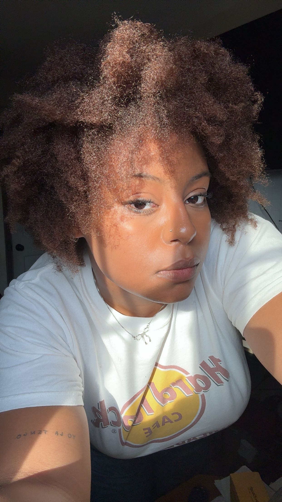

this is my portfolio site for the MEDP 150 class! i am so excited to learn more about digital media and to make some sick artwork.
esther garnered her love for photography picking up polaroids as a child to clutching her camera as a young film-obsessed teen. she describes her life spent in the upstate new york suburbs as one filled with confusion and dissociation, only making sense when it was expressed through her art.
esther’s work consists of the liminal and dreamlike pockets of human connection and existence. while shedding light on fond moments along with idealized displays of mood. her photos consist of a naturalistic and intimate style that reflects her own view of the world.
her adaptable approach to visual media allows her to work with several mediums, formats, styles, and genres. esther strives to stay curious while exploring her unknown ideas about emotion, connection, and livelihood through visual language.
email: estherr.tanis@gmail.com
instagram: @esther.a7c
